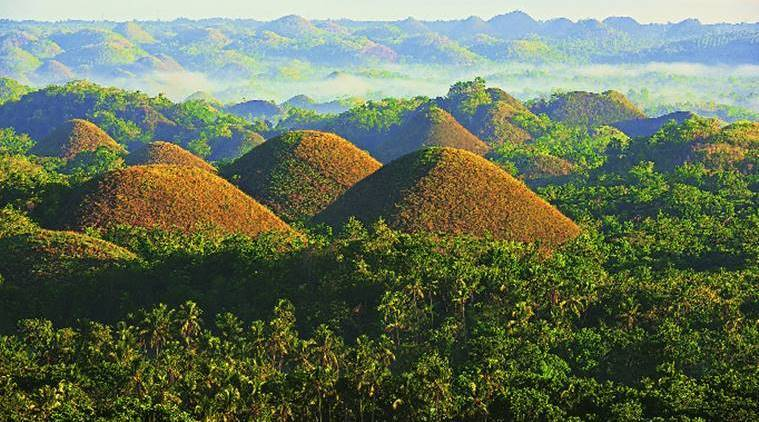
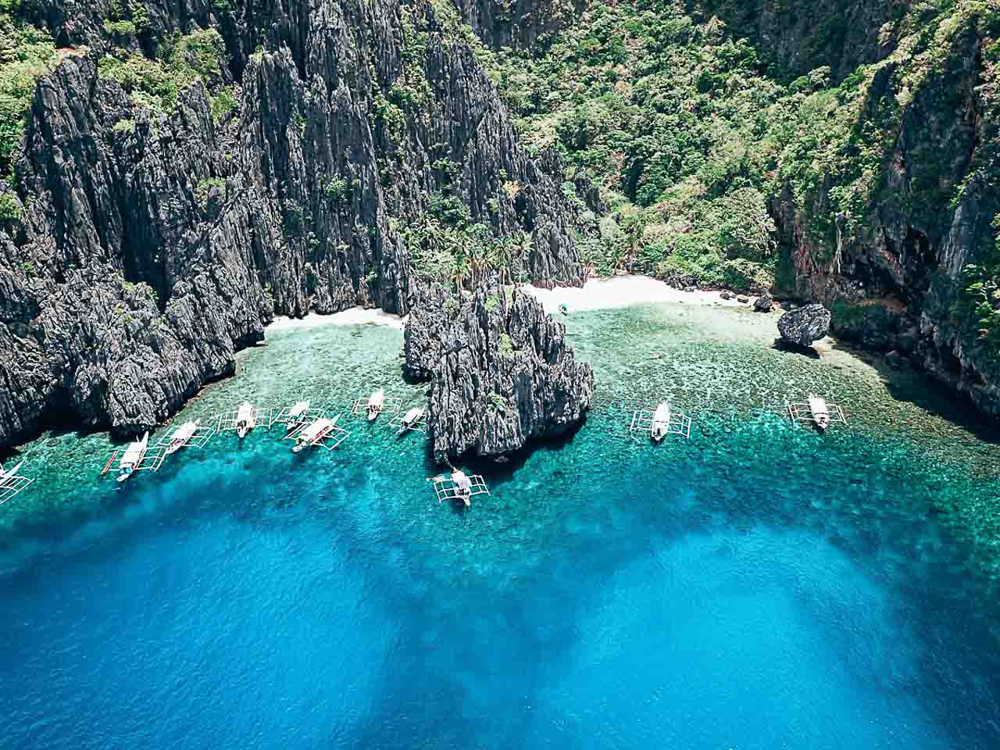

Luzon is the largest and most populous island in the Philippines. Located in the northern portion of the Philippines archipelago, it is the economic and political center of the nation, being home to the country's capital city, Manila, as well as Quezon City, the country's most populous city. With a population of 53 million as of 2015, it contains 52.5% of the country's total population and is the fourth most populous island in the world. It is the 15th largest island in the world by land area.
The Chocolate Hills form a rolling terrain of haycock-shaped hills—mounds of a generally conical and almost symmetrical shape. Estimated to be from 1,268 to about 1,776 individual mounds, these cone-shaped or dome-shaped hills are actually made of grass-covered limestone.
El Nido is known for its stunning lagoons, white sand beaches, rocky islets, towering limestone cliffs, and glasslike waters teeming with marine life. The island has earned nothing but praises from visitors, and numerous accolades of being one the best island and beach destinations in the world.
